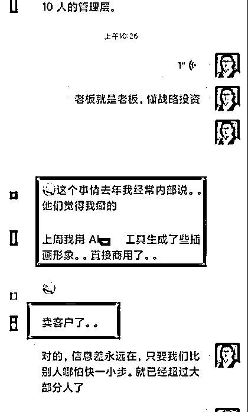

来源：https://gmvlvqwibh.feishu.cn/docx/TgLQd1akzop6RnxYKWicblrkntc
大家好! 我是沧海大表哥，全网同名，之前是电商公司设计经理，辞职一年，目前是设计师赛道的个人IP创业教练，有自己的一个社群：自由人，助力设计师副业/创业方向
主动离职创业，是因为一次偶然机会。抓住了平台红利，21年的时候3个月做抖音特效道具盈利百万。也是因为这次主动开始向外探索，想实现自己更大的价值。
和很多人一样，离开了公司平台自己创业，心里也是未知数，一没资源二没人脉，并没有清晰的创业方向。
我一直信奉，刚开始可以粗鲁一点，先把书包丢过墙头，你会想办法翻过去。
今天的分享，主要是今年涉足AI绘画项目，做了社群，7天实现7W+的复盘总结，希望对大家有所帮助，也欢迎交流。
做AI绘画项目期间也踩过不少坑，总结下来这次丛0-1的变现，跟大家分享一下
1.起因——机会留给有心人
2.机会不是时时有，来了要抓住！
3.群发售——摸着石头过河
4.直播很惨淡，我为何反而高兴？
5.AI绘画带给我的成绩
6.总结
偶然看到我社群的成员发在抖音的一个Midjourney 关键词视频火了，他发到群里，他是发着玩，我是当真了。
看了下，正好自己有之前玩游戏办的Visa卡，就充值了一个 Midjourney 30美金会员，
玩了下，发现这个应该会很受欢迎，马上就去看了抖音和小红书，发现不少人已经在做了。
当初自己是想先做Chat Gpt但是细心一想， Midjourney的基础普及红利会很快消失，还是先干MJ。
任何事都有红利期，看到就要马上干，尤其是基础红利！尤其是针对设计这个行业，对技术的感知会比普通人会更强一些。
分享几个观点：
当时我看朋友圈有人做GTP的课，我也买了，主要想学习下是怎么运营的，加上我自己抖音特效吸取的经验教训，所以这一次没犹豫，3月份AI刚冒出头（其实去年12月就知道AI绘画，但是没在意），刚好我们自由人社群有资深Midjiourney玩家，资源整合，先干再说。
说干就干，当天中午就发了一条朋友圈，拉了一个【AI陪伴群】（后来改名AI交流群），简单编辑了下文案，拉了两个熟悉的朋友进群，这就算正式启动啦，这是当时发的朋友圈
今年2月开始重视私域，之前也是不怎么发朋友圈的人，甚至看到别人每天发朋友圈都感觉是广告，直到自己开始尝试，一次次的正反馈，太香了，分泌的多巴胺和内啡肽让我很享受 ，通俗来说就是很有成就感，也是从2月开始做设计师的社群，转化率我可以至少达到60%-80%，聊10个人基本可以成交6-8人，对这个有兴趣的改天再开一帖。
我当时想的很简单，
1：私域：发朋友圈引流——拉群——转化（之前我是一年都发不了几个朋友圈的人）
2：公域：视频号直播做公开课（还是对朋友圈资源二次转化）
当时开始发朋友圈开始拉新，第一次做拉新，完全没经验，
就通过话术+AI绘画图引流，拉了6个群，满打满算800人。
决定做MJ以后,做的第一件事就是解决账号登陆问题。这是很多做课的不具备也不愿意做的一环，一个是太麻烦，主要是没钱赚。我既不是大的培训机构也没有强大的背书，唯独先利他。所以我自己先淘宝上买了账号，测试跑通每个环节，遇到的问题一一解决，最后形成SOP，当时把怎么拼账号作为一个钩子引流效果还是很好的。
这是当时拉群时拼账号的一部分记录
验证了需求以后，更加大了我做这件事的信心。也给参加课程的同学提供了增值服务：账号免费使用一个月，并交付账号使用流程。很多同学不仅赚了点小钱，还白嫖了账号的使用。
为了确保账号的稳定性，货比三家一一验证测试最终敲定。自掏腰包的这笔账号费用算下来在5K左右，重点是这解决了大家的必要问题，这也为我后面的拉新转化完美加分。
拉了群，有了账号，接下来就是在很短的时间内去看市面上已经有的课程是怎么玩的。
刷了一下能接触到的，普遍都是边学边干的居多。
分2种，当然也有行业很多大佬。
第一种：培训机构，多以设计行业为主，课程价格800-1000之间。
第二种：设计社群/个人，价格500-1000之间
比的话我没任何优势，不管是经验还是资源还是教学能力。

前面在拼车账号时已经对建群做了铺垫，有了第一个群，接下来的几个动作：
这里注意事项⚠️
编辑几个针对不同人的文案话术，不要让别人觉得你是群发，体感不好，也没什么效果。重要的人就不要群发了，比如我自由人的成员我都是单独问的，需要就需要，不需要也不强推
这是当时朋友圈拉群的动作
这两个动作操作下来，我发现有一些默默关注我的人，也有一些已经屏蔽我或者拉黑我的人，没关系，做好自己！
这波操作呢，也激活了那些沉寂在我微信通讯录的人，也让我更清晰一点：躺在通讯录里的人数就是我的流量了吗？不，得在你的微信里并且关注我朋友圈为我付费买单的才是我的流量，所以借着这次机会也对我朋友圈的人做了一次筛选，他屏蔽我的同时我也淘汰了他
拉群有个小技巧，不一定每个群都拉满500人，我是满200就开一个新群，先把群数量拉起来，给自己起势哈哈哈
这里需要注意⚠️拉群以后，做好群管理，以免这些群成了广告群
1、群公告设置好群规
2、建立标签
这里操作简单，设置好钩子福利即可，转发我朋友圈的小伙伴可以免费领取AI课程相关资料包（这个动作在建群拉新和课程宣发时都用到了）
❤小提示：这里并不是说把家里人的微信资源都用上就是好的，就像七大姑八大姨的微信发100条朋友圈也没有用，因为用户不对，产品再好也白搭，就像我老婆还是在互联网平台做运营的，自己朋友圈做微商时也赚了小20W，用户对于她来说很精准，发我的AI的结果就是有咨询没成交（因为好奇，只是想了解AI）
所以用户对标更容易转化和被成交
这是当时给我做转发的记录，不完全统计有90人左右
这几个动作下来，一共拉了6个群
人来了，让用户为你付费买单才是目的
先说下我为什么没有在公域拉新呢？主要是因为我的自由人社区（助力设计师成长项目变现的社群）也加上公域没怎么运营，所以主要在朋友圈和社群即拉新又转化，想想平时不怎么发朋友圈的我还挺难的？我是怎么破冰的呢？
这还真的感谢我自己提供的那个账号使用全流程，做了6个群第一波流量的铺垫，当开始正式宣发产品时，看到群信息和朋友圈的小伙伴就来了。这里也感谢自由人小伙伴对我的支持和信任

当时有个公司老板，刚开始接触AI绘画，公司一共9个管理层，老板全给他们报了我的AI绘画课。
因为我们的课程内容也很干，这里就不展示课程内容了，主要是分享AI绘画拿到结果过程。
这一点看着很俗，但很管用，很多人包括我自己开始都有这样的顾虑：不好意思晒成交，担心别人说我在炫耀，我教你怎么办：
1、你就把你自己当成实体店里的老板，朋友圈是我的店铺，我在我自己的店铺里做营销活动，合理合法
2、大大方方挣钱。你怕别人的眼光，不好意思，请问给你家孩子买奶粉的钱他替你出吗？每月你家的房贷他替你还吗？不会吧。
3、其实没有人会在乎，我们自己在别人那里真没那么重要
这是用成交案例促进的成交以及分销小伙伴的推广成交记录
这里主要是设置了限时使用的优惠券，成交案例+营销点。
大家都知道，首发是一个产品的最低价，如果要买肯定是越便宜越好，加上别人已经入手，促进了观望小伙伴的买单，这里又成交了一波，我清楚地记得我还在准备公开课的过程中，一位公司老板就给他的10位高管团报了AI课程。我当时发了一条晒成交的朋友圈，促进了转化且同时带动拉新


简单直接预告公开课时间，且朋友圈拉新依然还在进行（唯有源头活水来，精准流量池里的用户越多，转化率越高）
一个人的力量有限，一群人的力量无限，这主要做了两点：第一埋勾子引导转发（这是拉新的动作）第二，分钱（分销成功的人直接返现）分销CPS和具体操作步骤，自由人的会员即可享受分销权益@沧海/@沐星
总共100份，
50份699(40份来自于小鹅通，10份微信)
30份799
20份999
699是优惠价，799恢复原价，
因为是第一次做知识付费，也是想测试下 人群的客单的接受程度，开始涨价到999
有个设计老板一下买了10份，不仅自己买了，还给他公司9个管理层也买了，
因为他自己偶然的一次机会，做了一个AI绘画卖了几万。就想马上让公司全部学起来，就连负责财务的负责人也拉来一起学习。
其实你会发现，做老板的最会算帐，最懂得投产比，一个人几百块的投入，换回的是更多的机会，尤其是还在第一起跑线的时间窗口期！
赛道越垂直，对普通人来说 越容易做内容。因为你不会想太多，反而大多数人面对太多选择的时候都会晕菜，一直迷失在不断选择中....
可能有人会问，老板是偶然看到决定买的？
直接说，其实不是，你要做客户管理，尤其私域，给不同客户打不同标签。
发的每一次朋友圈，都是有针对性的触达，这点还是跟芷蓝，靠普他们学的！
我的圈子相对够垂直，80%都是设计公司老板和创业的。只要找到痛点，并对症下药，转化都还可以。
优点：都是有付费意识的群体，不用培养
缺点：需要长期，要建立信任。
通过数据发现50%的购买是集中在3.19和3.20
另外的来自3.21-3.25的陆陆续续的转化。
1:快速拉新，市场热度还在，当下转化
2:朋友圈推广，有钩子福利，这个起到了很关键的原因。很多人帮转发，而且都很垂直
3:分销机制，
未购买过课程的分销coals 20%
购买后课程的cps直接开50%
4.直播公开课
最高在线285人，人均观看23分，分享直播间113人
结果就是吃了个0业绩

时间比较仓促，3.19直播公开课，基本啥也没准备！没有一页PPT。
说起来整个项目前期的拉新和大部分转化都在私域，公开课在抖音进行的，时间推着自己往前走，哈哈拉着我老婆一起整理了直播脚本，测了网，做了准备。没想到第一场就来了个大翻车，一会断网了，一会违禁词被禁言，小插曲不断，至今历历在目呀。水来土掩，兵来将挡，硬着头皮往前冲，势气得拿捏哈哈，最后下播后，开心的是当晚累计成交了50单，这50单都来自群里和朋友圈已有的人，遗憾的是没有一单是抖音新增成交的。
但是我还是很高兴，因为我是第一次直播公开课，有这样的场观数据，已经远远超出了我的预期。
也让我觉得方向是对的，只要方向对了，解决就已经在路上。不着急，让结果再飞一会。
下面是我做的一些直播复盘，希望能给到大家一些帮助
直播没做的准备：
为何没准备直接上？
）１ 机会：如果说机会，你在一个非常热门的领域——Ai绘画直播中抓住了机会。因为这个领域的红利期很短，所以一旦抓住了机会，就有更大可能获得成功。
因为自己知道抢先一分钟就可能多一转化一单，这个时间窗口会很快过去！
我知道其他几个比较大的机构 直播时间也在这几天，抢占先机。用户又重叠，其他人也关注了他们公众号，
如果我在他们之后，我感觉至少要少一半单子，对比做了N年教育的机构，我是新人，基本没啥优势。
）2 快速测试，小范围验证，我当时的想法是 第一次测试，直接边跑边验证，因为我后面还有其他AI的计划，哪怕这次不成功，也在自己的接受范围内。
）3 创意：我们是视频号双人直播，直播内容具有独特的创意和吸引力，能够吸引很多观众的眼球。这也是第一次直播能有285人在线的一个原因
）4 热情：我做事有一个原则，我必须感兴趣，不感兴趣赚钱也不做。对喜欢的事，愿意投入大量的时间和精力去做这件事情。这种热情和投入不仅能够帮助我克服困难，还能够吸引更多的观众和粉丝。
勇气：我敢于尝试和冒险，没有因为缺乏经验而放弃。这种勇气和决心是我个人觉得成功的关键因素之一，能够帮助你克服挑战和困难。比如我们直播中被判3次违规，关小黑屋。
还是先上图，一图胜千言
直播经历了一系列问题
1.违规关禁闭3次
2.直播间频出现电磁噪音
3.当天直播公司断网3次，之前从未有过
4.购物车都没有
5.不会拉停留，不知道怎么互动等等。
总结概括为以下问题
）1.基础问题
）2.配合问题
）3.直播内容问题
）4.课程问题
）5.设置问题
导致3.21直播 数据明显下滑
下面是3.19和3.21对比图
好在观众给力，断播几次，重新开， 大家也都回来了
很多观众观看在1个小时15分钟以上
附上复盘脑图
下面是AI绘画 第一次直播复盘
唯有实战，真诚利他
不管大家遇到什么问题， 只要我看到 都会去帮忙解决。
朋友圈/社群学员案例分享，再次促成交
随着开课，学员的正反馈和商业变现案例不断出现，这有时候酒香也怕巷子深啊，只有让别人看到才相信。主打的还是社群和朋友圈，这时候呢又转化了一些观望或者之前没看到的人
这是AI用于商业变现的案例发圈分享
我就是通过以上几点，最后完成100+份课程变现，收入7W+，整个项目从0-1变现闭环，更多的是收获。咱有了实打实的项目落地经验，不是听别人说的，这是自己一步一步走过，失败中总结出来的。目前也沉淀了项目各环节的SOP，这个也直接用到了我的合伙人的交付中……
让我感觉最大的成绩是，很多学员，他们赚回了不仅赚回了学费，
还有学员和我给共同组建了AI工作室，业绩也还不错，一场企业内训收费6999元。
我清楚的记得我们ＡＩ第一节课，有个做包装的自由职业的西安女孩，被他客户催做一个酒的包装，已经很晚了。
当时他刚上完我们课都已经20：30后了，她没时间做，正好在学AI就尝试的做了。
结果客户很喜欢，正是他们要的方向，当场定稿。那个包装不贵，3000元，学员在群里报喜。
还有很多案例，不一一展示
通过2周AI系统的学习，
成立了工作室，
现在AI 业务已经忙不过来，也拉了很多小伙伴合作。
昨天在给深圳一家历经16年沉淀规模高端
领导品牌公司做年会背景板头像
早期的头像业务数量还不多
我们已经跑通了方法论，可以把人物做到很像！
还跟一个上市企业年会做了定制头像
一个合伙人15999元，这个是额外的产出
AI让我看到了更多机会，也看到了有望去做超级个体的决心
AI生成效果
游戏公司角色
效果图
室内效果图
换装商业案例
商业名画写实案例
我是知识付费赛道的小白，23年2月才开始接触，
我觉得这有运气的成分，但，做才最重要‼️
说干就干。当时想的很简单，等什么都准备好了再去做，时机就过了，哪有什么真正准备好的那一刻呀，都是真枪实弹干出来的，事实也证明，边学边做才是正确的。
没有等出来的成功，只有干出来的精彩！
AI来了不可怕，低成本也不可怕，
可怕的是极具效率的低成本带来的低价。
从红利期马上会消失，我们已经准备好接下来的路，
怎么在成功的在红海市场中开辟了一片蓝海市场
归根结底还是要看需求找的准不准
在顾客心中塑造一个差异化的需求
在消费者心中留下一个独特的钩子
低成本、差异化、集中度、三位一体
最后一点思考
1. 在绝对赛道面前，一切所谓的能力，聪明都显得那么苍白无力
2：时代机遇，顺势而为。
2：做可复制的事，通过付费筛选合适的人！
3：充分让利，找到更多志同道合伙伴！
4：不能只做单线，必须有可以一直赚钱的项目，然后拓展其他项目，并几个项目可以互相赋能
后来看到小红书越来越多的人在做AI绘画，尤其是AI头像。我跟社群小伙伴一起又出了AI头像的产品，下一帖可单独讲下AI头像我们是怎么做的，给大家再详细拆解下。
我是沧海，深耕视觉领域，所有跟设计相关都可以找我
我是沧海
设计师的创富教练｜自由人青年创始人
珀莱雅设计经理，裸辞转型自媒体创业
专注：帮助设计师提升商业思维，打造您的个人事业（副业/自由职业/轻创业）
只做一件事：帮助有理念的设计师，成为自由创业者
欢迎成为加入沧海的自由人，成为会搞钱的设计师。
围观沧海的年入百万朋友圈
过去曾发表过几篇文章
都能看到这，代表你对文章的喜爱
也欢迎阅读过去我写过的历史文章。
自由职业轻创业起步课70节+交流群 199元
https://lxgof.xetlk.com/s/366pGL
https://lxgof.xetlk.com/s/2kP8jL
https://mp.weixin.qq.com/s/uzXgAOMpQMHbcif44NJiBQ
4.沧海的付费产品
【1】轻创业起步课（70节+创业交流群）
https://lxgof.xetlk.com/s/366pGL
【2】沧海个人事业合伙人 （5年制）
https://lxgof.xetlk.com/s/3fjXde
【3】设计师小红书账号运营
https://lxgof.xetlk.com/s/1AhXOh